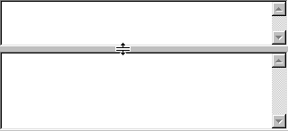

( top, bottom )
Displays two controls one above the other with a SplitterControl between them. The splitter can be dragged with the mouse to change the relative sizes of the two sides (by adjusting their Ystretch values). If the containing window is resized, the two halves will maintain the proportions of the split.
For example:
Window( #( VertSplit Editor ( Editor ystretch: 3 ) ) )
Would display:
Notice the specification of ystretch to set the initial proportions of the split.
Derived from Split.